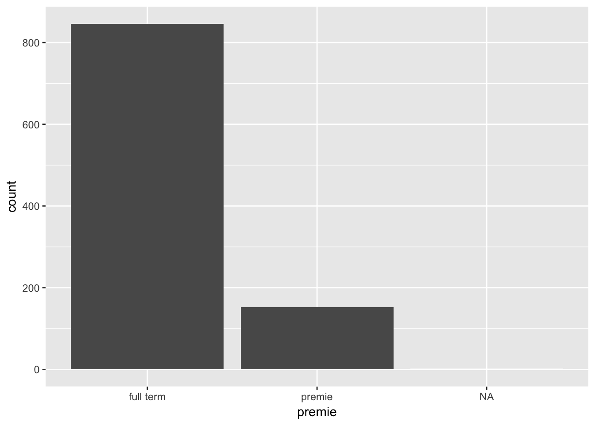

In this lab we will introduce ways to get data into R, and how to start exploring the data.
After completing this lesson students will be able to
Before we go much further, let’s talk about the word delimiter. This is the character, or symbol, that separates columns of data from each other when stored in an external file. This file could be a simple .txt text file or an .xlsx Excel file. Recall back to the Data Camp exercises on data frames and matrices. Each column in the matrix represented data on a specific variable. Something had to tell R how to distinguish which values went with which variable.
There are two main types of delimiters we will consider in this class; comma and tab. That does not mean that data can’t be stored in other ways, these are just the two most common.
The path is a programmatic way to direct your computer to the location of a file. It’s like the file’s address, or, where it lives on your computer.
In all the examples below, the path shown (data/) is the path on MY computer.You will have to update this path to YOUR path on YOUR machine that points to your MATH130 folder.
Revisit the Software Overview blog post from Dr. Donatello’s website on how to find your path.
NCBirths, email, and Police Shootings.In this lesson we are only going to explore reading flat files that exist on your computer into R from three most commonly used data sources: A tab-delimited text file, A CSV file and an Excel file. Ideally each row represents data on a single observation and each column contains data on a single variable, or characteristic, of the observation. This is called tidy data. We will start to learn some tools to look at the data, and for getting data from an external file into R for analysis.
The first thing you should always do is look at your data and ask yourself the folliwng things:
There are many ways this can be done, here are three
str() to show you the structure of the data frame.head() to show you the top 6 rowsdata[1:x, 1:x] - when the data frame is too large for the above two to work well, we can use matrix notation to view only the first X columns, and first X rows.Text files are very simple files that have a .txt file extension. Common delimiters include a space, a comma (,) or a tab. Uncommon delimiters could include a % or even a semi-colon. Follow along with these examples and make sure you can read in the data correctly and that it matches what is shown below.
We will use the read.table() function that is in base R to read in any type of delimited file. A tab-delimited text file can be read in using "\t" as the deliminator character. In this class you ALWAYS want to include header=TRUE to signify that the data in the first row contains our column names.
email <- read.table("data/email.txt", header=TRUE, sep="\t")str(email)## 'data.frame': 3921 obs. of 21 variables:
## $ spam : int 0 0 0 0 0 0 0 0 0 0 ...
## $ to_multiple : int 0 0 0 0 0 0 1 1 0 0 ...
## $ from : int 1 1 1 1 1 1 1 1 1 1 ...
## $ cc : int 0 0 0 0 0 0 0 1 0 0 ...
## $ sent_email : int 0 0 0 0 0 0 1 1 0 0 ...
## $ time : Factor w/ 3840 levels "2011-12-31 22:16:41",..: 1 2 6 3 4 5 7 10 14 8 ...
## $ image : int 0 0 0 0 0 0 0 1 0 0 ...
## $ attach : int 0 0 0 0 0 0 0 1 0 0 ...
## $ dollar : int 0 0 4 0 0 0 0 0 0 0 ...
## $ winner : Factor w/ 2 levels "no","yes": 1 1 1 1 1 1 1 1 1 1 ...
## $ inherit : int 0 0 1 0 0 0 0 0 0 0 ...
## $ viagra : int 0 0 0 0 0 0 0 0 0 0 ...
## $ password : int 0 0 0 0 2 2 0 0 0 0 ...
## $ num_char : num 11.37 10.5 7.77 13.26 1.23 ...
## $ line_breaks : int 202 202 192 255 29 25 193 237 69 68 ...
## $ format : int 1 1 1 1 0 0 1 1 0 1 ...
## $ re_subj : int 0 0 0 0 0 0 0 0 0 0 ...
## $ exclaim_subj: int 0 0 0 0 0 0 0 0 0 0 ...
## $ urgent_subj : int 0 0 0 0 0 0 0 0 0 0 ...
## $ exclaim_mess: int 0 1 6 48 1 1 1 18 1 0 ...
## $ number : Factor w/ 3 levels "big","none","small": 1 3 3 3 2 2 1 3 3 3 ...email data set has 3921 observations, and 21 variables.$.time. If we wanted to examine a time trend, we would need to convert the class into a datetimeThe best method I have found so far to read in Excel files is from the readxl package by Hadley Wickham. This package need to be installed first, and then can be simply loaded each time you start an R session where you will be reading in this type of data. Go ahead and install it now.
The read_excel() function is what we are going to use. Note the use of the underscore _ instead of a period . between read and the file type.
library(readxl)
police <- read_excel("data/WashPost Police Shootings 2015.xlsx", sheet=1, col_names=TRUE)
police[1:10,1:5]## # A tibble: 10 x 5
## id name date manner_of_death armed
## <dbl> <chr> <dttm> <chr> <chr>
## 1 3.00 Tim Elliot 2015-01-02 00:00:00 shot gun
## 2 4.00 Lewis Lee Lembke 2015-01-02 00:00:00 shot gun
## 3 5.00 John Paul Quintero 2015-01-03 00:00:00 shot and Tasered unarmed
## 4 8.00 Matthew Hoffman 2015-01-04 00:00:00 shot toy wea~
## 5 9.00 Michael Rodriguez 2015-01-04 00:00:00 shot nail gun
## 6 11.0 Kenneth Joe Brown 2015-01-04 00:00:00 shot gun
## 7 13.0 Kenneth Arnold Buck 2015-01-05 00:00:00 shot gun
## 8 15.0 Brock Nichols 2015-01-06 00:00:00 shot gun
## 9 16.0 Autumn Steele 2015-01-06 00:00:00 shot unarmed
## 10 17.0 Leslie Sapp III 2015-01-06 00:00:00 shot toy wea~date is a dttm or date-time variable. This means R recognizes it directly as a date, not some string of numbers.manner_of_death and city are read in as character instead of factor. We may or may not want to change that later.age are of type dbl (double). This is similar to integer or numeric, so we are fine.CSV is a fancy way of saying a text file with comma-separated values (i.e. CSV). This file type can also open in Excel, the icons even look similar.
We could use read.table() to import this data file, but read.csv() is optimized to read in CSV files.
NCbirths <- read.csv("data/NCbirths.csv", header=TRUE)
head(NCbirths)## fage mage mature weeks premie visits marital gained weight
## 1 NA 13 younger mom 39 full term 10 married 38 7.63
## 2 NA 14 younger mom 42 full term 15 married 20 7.88
## 3 19 15 younger mom 37 full term 11 married 38 6.63
## 4 21 15 younger mom 41 full term 6 married 34 8.00
## 5 NA 15 younger mom 39 full term 9 married 27 6.38
## 6 NA 15 younger mom 38 full term 19 married 22 5.38
## lowbirthweight gender habit whitemom
## 1 not low male nonsmoker not white
## 2 not low male nonsmoker not white
## 3 not low female nonsmoker white
## 4 not low male nonsmoker white
## 5 not low female nonsmoker not white
## 6 low male nonsmoker not whiteNCbirths data set has 1000 rows and 13 columns.NA values for the variable fage (fathers age).NA as a placeholder when the value for that piece of data is missing.Problem 1 R can’t do arithmetic on missing data. So 5 + NA = NA, and if you were to try to calculate the mean() of a variable, you’d also get NA.
mean(NCbirths$fage)## [1] NAProblem 2 Some plots will show NA as it’s own category, which is undesirable.

How to identify if your data has missing values
head() or str()table() for categorical data and summary() for numerical data.table(NCbirths$habit, useNA="always")##
## nonsmoker smoker <NA>
## 873 126 1summary(NCbirths$fage)## Min. 1st Qu. Median Mean 3rd Qu. Max. NA's
## 14.00 25.00 30.00 30.26 35.00 55.00 171Later labs will discuss how to work around these missing values.